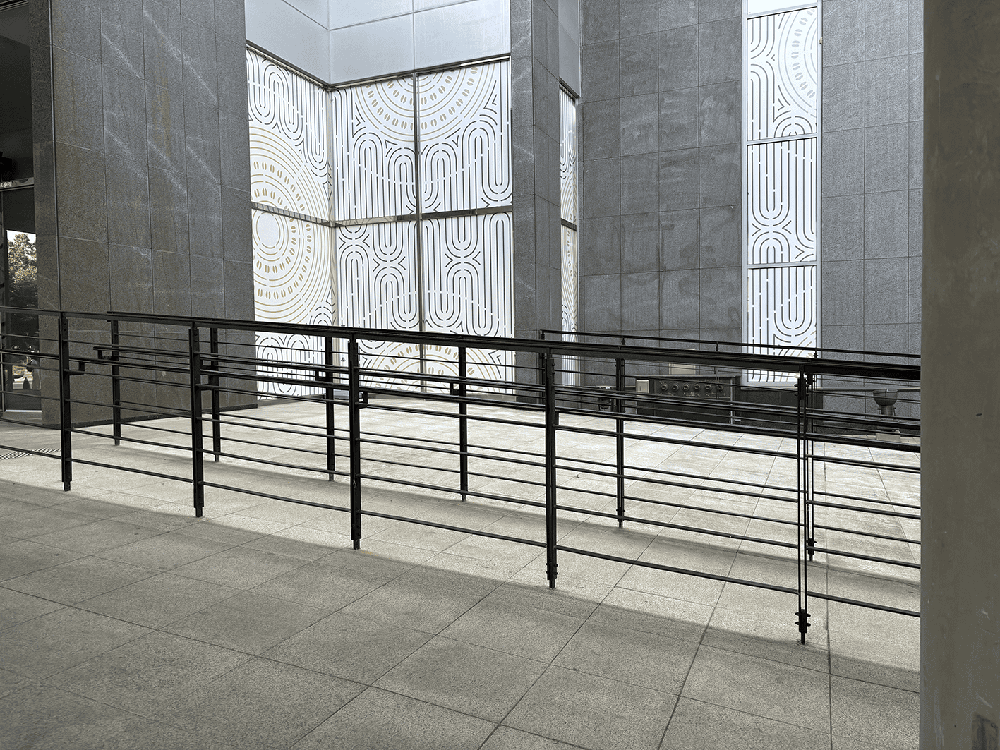

RAMP란?
“램프는 높낮이 차이를 부드럽게 이어주는 경사 구조물로,
누구나 자유롭게 이동할 수 있도록 돕는 설비입니다."
- ＊ 기울기 규정: 휠체어 접근을 위한 램프는 일반적으로 1:12 이하
(1m 오를 때 12m 길이 필요) 권장 (대한민국 장애인·노인·임산부 등의 편의증진 보장법 참고)
- ＊ 폭 규정: 최소 폭은 보통 900mm 이상
- ＊ 두 사람 이상이 동시에 이용 가능한 경우 더 넓게 설계
- ＊ 내구성: 외부 램프는 날씨, 하중, 빈도에 따라 재질 선택 중요